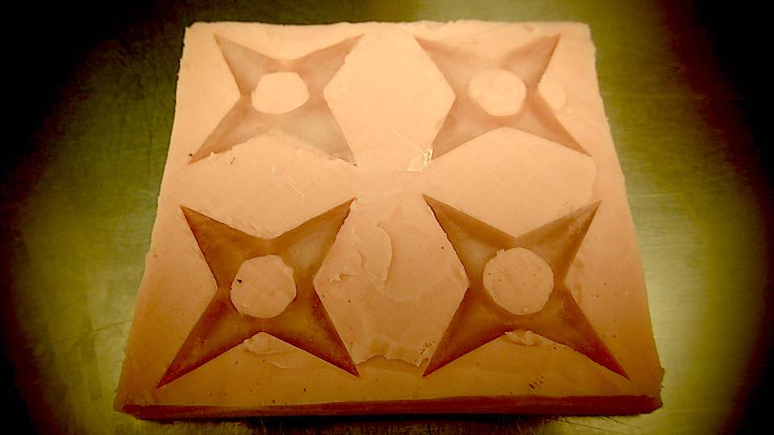

****************************************************************************************************************
ASSIGNMENT: DESIN A 3D MOLD, MACHINE IT, AND CAST PARTS FROM IT.
Project : Make some chocolates and ices cubes for Ninja
Soft : Rhinoceros # Cura #
Machine: CNC Stepcraft 420 # 3D Printer Prusa Mendel I3
Material : ABS 3mm
DOWNLOAD:
***********************************************************************************************************
For first thing I must annotate that in our fab lab we have a problem with the small CNC machine.
It 's not currently work.
For this reason I have decide to proceed, for the moment, to use the 3D printer to realize the mold.
With Ryno I have created a simple empty box. Inside I have modeled a easy ninja star. Then I have mirrored it in 4 models end exported the stl file.

Then I have proceeded, after having appropriately scale it, to the creation of the G Code using Cura.


